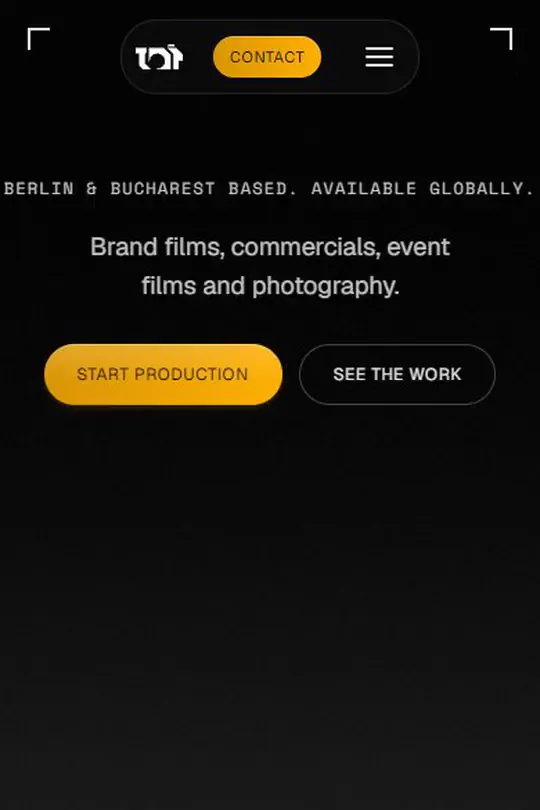
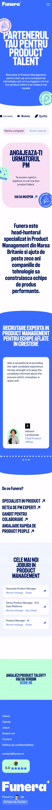
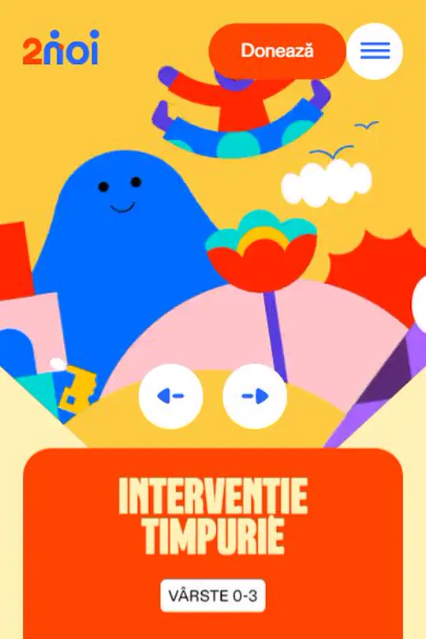
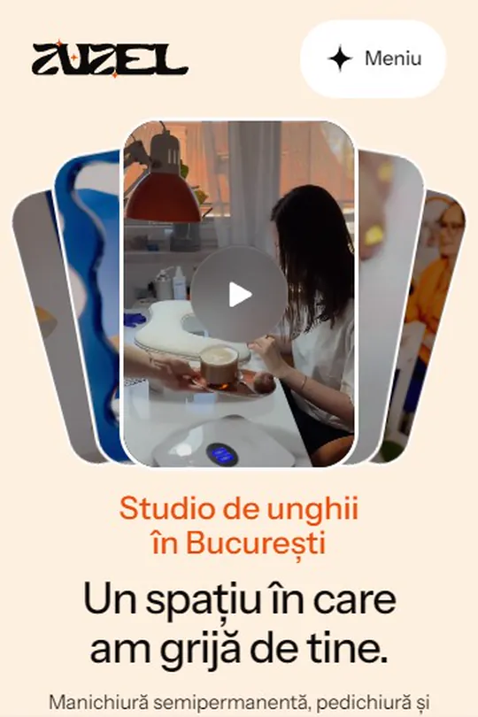
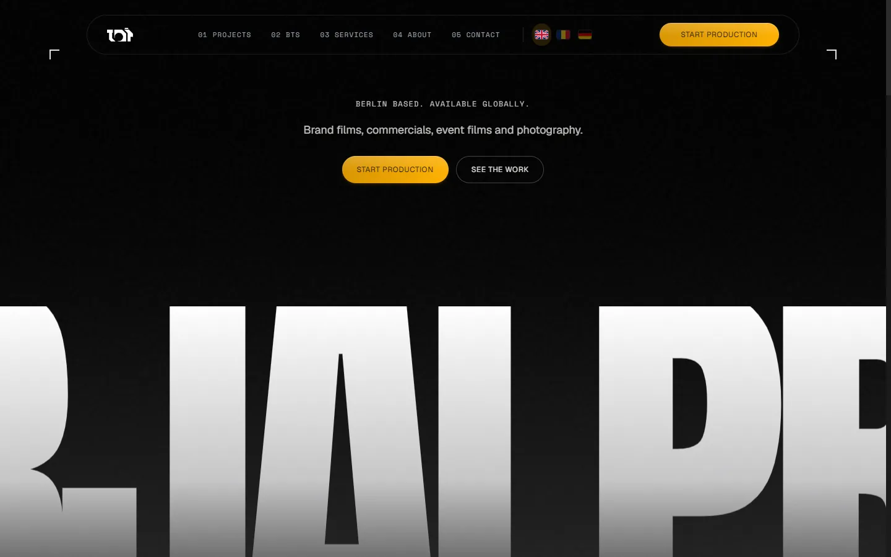
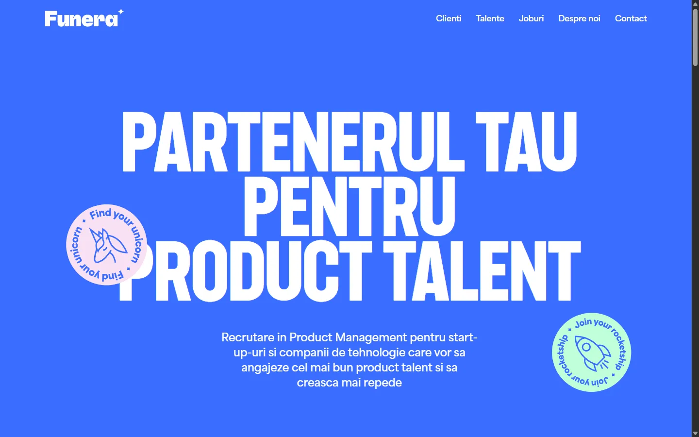
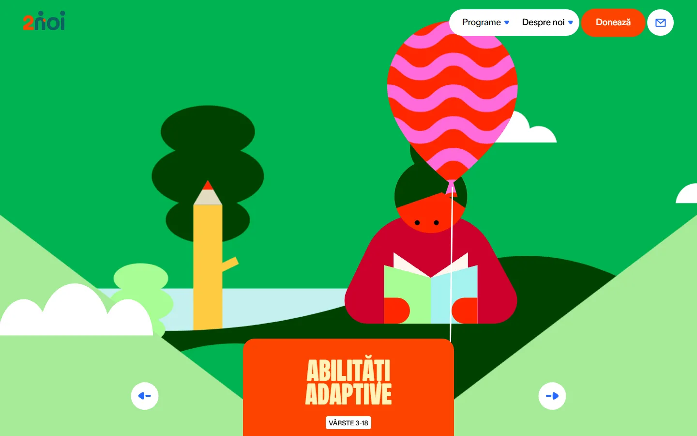
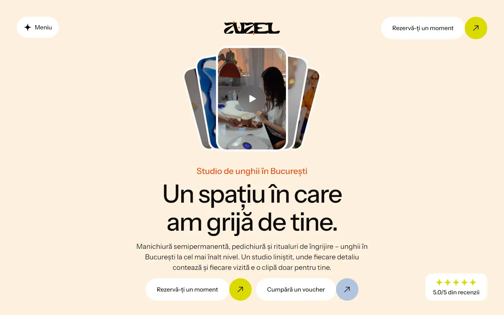

Prototip static. Nu modifică site-ul. Media e cea reală din legacy-mirror/. Treci cu mouse-ul peste carduri; în B apasă pe un card.
A · Cardul duce direct pe site
Din portofoliu
Câteva dintre proiectele noastre. Apasă pe un card ca să vezi site-ul live.




B · Cardul se deschide pe loc
Din portofoliu
Câteva dintre proiectele noastre. Deschide un card ca să vezi ce am făcut și pentru cine.
Vezi tot portofoliul →
Site de prezentare în limba engleză. Pentru un studio de film și fotografie din Berlin și București.
Vezi site-ul (se deschide într-o filă nouă) Vreau un site ca acesta

Site de prezentare pentru o agenție de recrutare. Agenția caută specialiști în Product Management pentru companii de tehnologie.
Vezi site-ul (se deschide într-o filă nouă) Vreau un site ca acesta

Site de prezentare în limba română. Programe pentru copii, adulți și familii neurodivergente.
Vezi site-ul (se deschide într-o filă nouă) Vreau un site ca acesta

Site de prezentare cu rezervări și vouchere cadou. Pentru un studio de unghii din București, cu un brand animat în stil anii '70.
Vezi site-ul (se deschide într-o filă nouă) Vreau un site ca acesta